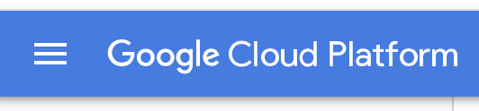
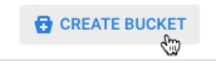
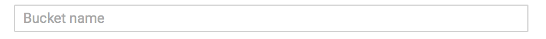
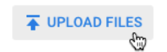

This guide will get you started with Google's Prediction API.
About: Google's Prediction API provides a way to build machine learning models for your Google Cloud Platform applications. The models may be used to process data that can perform a variety of tasks. Potential uses include: spam detection, reccomendation systems, sentiment analysis, automatic completion, and many more. For this guide we will be using Node.js in Google's App Engine on the Cloud Platform
Let's get started!Step 1: Navigate to the projects page of your Google Cloud Platform account. Select or create a new project. If new to Google Cloud Platform, create an account. The create count page can be found Here.
Create AccountStep 2: Enable billing for the selected project. This is necessary to use the Prediction API. You will not be charged for implementing the API for this training. Billing can be enabled by selecting the billing tab at the left of the dashboard for your selected project. If billing was never disabled for the selected project Google defautls the billing setting to "enabled". For more information about enabling the billing for the project please follow this link.
Enable BillingStep 3: Enable the Google Cloud Storage and Prediction APIs. From the dashboard window, select enable API's in the getting started section. From there you may click the link indicated by a +sign. Search for and enable the Prediction API, Google Cloud Storage JSON API, and Google Cloud Storage. Enable by selecting the enable button at the top. You may also simply select the button below while logged in to your Google Cloud Platform account.
Enable APIsStep 4:The last step is to download the sample training data file. We will explain and use this later as we begin to use the Prediction API. You may download the training data here.
Download Training DataCreating Training Data: At this point we have all the tools needed to start creating and training data for our machine learning model. Essentially what we will be doing here is creating a machine that processes data we send to it. The machine makes a judgement on how to process our data based on prior knowlege. This is where creating data comes in. We need to create data and train that machine model with it to act as the machine's prior knowledge. We may do this by following these steps.
Step 1: From the Google Cloud Platform dashboard, navigate to the drop down menu in the top left of the screen. Select Storage.
Step 2: A window will appear in the middle of the browser if this is your first time using Google Cloud Platform. Select Create Bucket. If it is not your first time using the platform, select this button in your console window. 
Step 3: Enter a globally unique name in the Name field. This name will be used for your storage bucket. If the name is not unique other Google Cloud users may have access to it.
Step 4: Keep the default settings in the remaining fields. These fields are for speciying the content type and accessability of the files stored in your bucket for now the default settings are fine. Select Create!
Step 5: After the bucket has been created we can now store content. Select the Upload Files button.  Navigate to and upload the file we downloaded in setup, language_id.txt. This is the training data we will use to train our model.
About: Google's App engine is a Google Cloud Platform based application server for hosting Google Cloud Applications. It is entirely possible to use Prediction API elseware, but for an understanding of the client and server side of this API, we will be using the APP engine. The language used to host on the server is optional. The example's in this guide will be presented in Node.js.
Creating App: Navigate and select the drop down menu at the left of your console. Select App Engine from the drop down menu. If it is your first time using Google App Engine navigate to the "Your first app" section and select Node.js from the Select a language button. I strongly reccommend following the quick start guide at the right of the screan to learn to start an App on the server using Node.js. If you have experience using Google App Engine create a new app using Node.Js within the project we created in setup.
Programming the app to handle client requests: Now that we have an application created we need to write some code to allow the application to accept requests. This will vary depending on the intention of the application. Here are some fundamental examples of code an app would need. Google has written these functions to be used specifically with the Prediction API.
Require: This function sets a variable prediction to handle requests to the application. It is passed two JSON pairs for the clients project name and path to a json keyfile (package.json).
Handle Trained Models: This function accepts the models that have been trained to the application. It also accepts an error code to handle handle errors when requesting from the server.
Handle Existing Models: This function references an existing trained model. It may then create and use that model as a variable.
Train: This function is called to train models. The function is passed a model name, description and user specified function for specific training requirements.
Query: This function handles API queries. It takes a specified type parameter and a function that handles errors and stores the response in a results variable. The results are returned in JSON.
Training: Now that we have a host for our application we can contact that application with training data and train our model. For the purposes of this guide we will use provided training data.
Post: This is a post request. It will take a reference to the API using the project ID and the desired model name. In this case it will pass two JSON objects. The first is a function ID that specifies how the API will handdle the results. The second is a storage location for the training data. The key for this JSON object is a specified location name and the value is the file path to the training data. In this case the name of the Google Cloud bucket and the language_id.txt file.
Response If the post is successful the recieved response in the console will look like this. The JSON objects in the response represent the kind of API post, the machine learning model id and name. The HTTP reference. And the storage location of the training data.
Double Check: In the last section we posted our training data to the Prediction API, now we need to see if our machine learning model will work when trained with that data. To do this we'll make a get request.
Get Request We will be making a get request to the API using the above code. When we look at the HTTP path a few things are needed to get the riht information from the request. The first section is the address reference of the Prediction API. Next we have projects which is part of the path to determine what project context we are using. Then we have the project ID which was previously specified. Then we have the file area that holds our trained machine learning models. Finally we target the specific machine learning model by name.
Response: If the get request is successful we will recieve a response from the API that looks like this. The response is comprised of the following JSON objects. The first three are the same as the Post response objects. They pertain to the model that was called and the location of that model. The next two obects deal with the status codes regarding the creation and training of the model. The subcategory "modelInfor", holds information regarding the model type, size, and accuracy. The final JSON object is what we're looking for the "trainingStatus" key holds the status of the machine learning model training. If the value is "DONE" we have been successful in training the model with the data and the training is complete. If the status is "RUNNING" the training is still in progress.
Try it!: Now that we have our machine learning model trained we can ask it some questions and it will hopefully make judgements or predictions based on its training. To try it, let's send a query to the API.
Post: Above is our post request. It is similar to our initial post request we used to input our training data with the exception of adding a method on the end called predict.This will tell the machine learning to process our input with the prediction method. The post is also passing some information. The information passed in this case is a JSON object with the "input" key and and a value which is also a key named "csvinstance". That key's value is a string of french words. For our model and the information we will pass in the post we should recieve a response with identified languages based on the input strings.
Response: Now we can see if our machine learning model is functional. The response will tell us if the model was successful in predicting the language. Let's look at the contents. The first few lines we've seen before. The next line, ""outputLabel": "French" is what we're looking for. This tells us that indeed the machine learning model we created has predicted the correct language. The following lines of the response are essentially checkboxes for the machine learning model. According to it's training the input string was not a match for english or spanish but it was for french. Thus the key "score" is set to "1.000000".
Almost done: The last thing we need to do is clean up after ourselves. The reason being that if we do not delete our model and we may be susceptable to charges if the model is used in the API. To do this we can follow the following three steps.
Step 1: We need to delete the predictive model. We can do this one of two ways the first is calling the prediction.trainedmodels.delete method somewhere at the end of our program when we have finished using the model. The second is following the link below.
Step 2: Navigate to the Google Cloud Storage Browser. You can follow the link below.
Step 3: Navigate to the storage bucket created for this guide and click the checkbox next to the bucket. Now click Delete